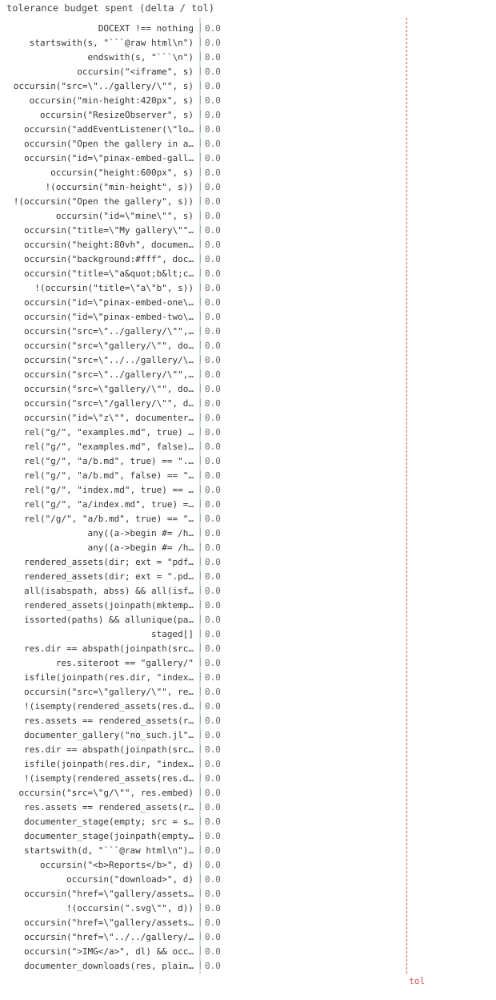

66/66 passed · 3.54s
| id | label | got | want | Δ vs tol (kind) | |
|---|---|---|---|---|---|
| ✓ | t314 | DOCEXT !== nothing @ test_documenter.jl:10 code | 1.0 | 1.0 | 0.0 vs 0.5 (abs) |
| ✓ | t315 | startswith(s, "```@raw html\n") @ test_documenter.jl:15 code | 1.0 | 1.0 | 0.0 vs 0.5 (abs) |
| ✓ | t316 | endswith(s, "```\n") @ test_documenter.jl:16 code | 1.0 | 1.0 | 0.0 vs 0.5 (abs) |
| ✓ | t317 | occursin("<iframe", s) @ test_documenter.jl:17 code | 1.0 | 1.0 | 0.0 vs 0.5 (abs) |
| ✓ | t318 | occursin("src=\"../gallery/\"", s) @ test_documenter.jl:18 code | 1.0 | 1.0 | 0.0 vs 0.5 (abs) |
| ✓ | t319 | occursin("min-height:420px", s) @ test_documenter.jl:19 code | 1.0 | 1.0 | 0.0 vs 0.5 (abs) |
| ✓ | t320 | occursin("ResizeObserver", s) @ test_documenter.jl:20 code | 1.0 | 1.0 | 0.0 vs 0.5 (abs) |
| ✓ | t321 | occursin("addEventListener(\"load\"", s) @ test_documenter.jl:21 code | 1.0 | 1.0 | 0.0 vs 0.5 (abs) |
| ✓ | t322 | occursin("Open the gallery in a new tab", s) @ test_documenter.jl:22 code | 1.0 | 1.0 | 0.0 vs 0.5 (abs) |
| ✓ | t323 | occursin("id=\"pinax-embed-gallery\"", s) @ test_documenter.jl:23 code | 1.0 | 1.0 | 0.0 vs 0.5 (abs) |
| ✓ | t324 | occursin("height:600px", s) @ test_documenter.jl:30 code | 1.0 | 1.0 | 0.0 vs 0.5 (abs) |
| ✓ | t325 | !(occursin("min-height", s)) @ test_documenter.jl:31 code | 1.0 | 1.0 | 0.0 vs 0.5 (abs) |
| ✓ | t326 | !(occursin("Open the gallery", s)) @ test_documenter.jl:32 code | 1.0 | 1.0 | 0.0 vs 0.5 (abs) |
| ✓ | t327 | occursin("id=\"mine\"", s) @ test_documenter.jl:33 code | 1.0 | 1.0 | 0.0 vs 0.5 (abs) |
| ✓ | t328 | occursin("title=\"My gallery\"", s) @ test_documenter.jl:34 code | 1.0 | 1.0 | 0.0 vs 0.5 (abs) |
| ✓ | t329 | occursin("height:80vh", documenter_embed("g/"; height = "80vh")) @ test_documenter.jl:36 code | 1.0 | 1.0 | 0.0 vs 0.5 (abs) |
| ✓ | t330 | occursin("background:#fff", documenter_embed("g/"; style = "background:#fff")) @ test_documenter.jl:37 code | 1.0 | 1.0 | 0.0 vs 0.5 (abs) |
| ✓ | t331 | occursin("title=\"a"b<c>\"", s) @ test_documenter.jl:42 code | 1.0 | 1.0 | 0.0 vs 0.5 (abs) |
| ✓ | t332 | !(occursin("title=\"a\"b", s)) @ test_documenter.jl:43 code | 1.0 | 1.0 | 0.0 vs 0.5 (abs) |
| ✓ | t333 | occursin("id=\"pinax-embed-one\"", a) @ test_documenter.jl:49 code | 1.0 | 1.0 | 0.0 vs 0.5 (abs) |
| ✓ | t334 | occursin("id=\"pinax-embed-two\"", b) @ test_documenter.jl:50 code | 1.0 | 1.0 | 0.0 vs 0.5 (abs) |
| ✓ | t335 | occursin("src=\"../gallery/\"", documenter_embed("gallery/", pretty; page = "examples.md")) @ test_documenter.jl:59 code | 1.0 | 1.0 | 0.0 vs 0.5 (abs) |
| ✓ | t336 | occursin("src=\"gallery/\"", documenter_embed("gallery/", plain; page = "examples.md")) @ test_documenter.jl:62 code | 1.0 | 1.0 | 0.0 vs 0.5 (abs) |
| ✓ | t337 | occursin("src=\"../../gallery/\"", documenter_embed("gallery/", pretty; page = "man/examples.md")) @ test_documenter.jl:67 code | 1.0 | 1.0 | 0.0 vs 0.5 (abs) |
| ✓ | t338 | occursin("src=\"../gallery/\"", documenter_embed("gallery/", plain; page = "man/examples.md")) @ test_documenter.jl:71 code | 1.0 | 1.0 | 0.0 vs 0.5 (abs) |
| ✓ | t339 | occursin("src=\"gallery/\"", documenter_embed("gallery/", pretty; page = "index.md")) @ test_documenter.jl:77 code | 1.0 | 1.0 | 0.0 vs 0.5 (abs) |
| ✓ | t340 | occursin("src=\"/gallery/\"", documenter_embed("/gallery/", pretty; page = "man/x.md")) @ test_documenter.jl:80 code | 1.0 | 1.0 | 0.0 vs 0.5 (abs) |
| ✓ | t341 | occursin("id=\"z\"", documenter_embed("gallery/", pretty; page = "index.md", id = "z")) @ test_documenter.jl:85 code | 1.0 | 1.0 | 0.0 vs 0.5 (abs) |
| ✓ | t342 | rel("g/", "examples.md", true) == "../g/" @ test_documenter.jl:92 code | 1.0 | 1.0 | 0.0 vs 0.5 (abs) |
| ✓ | t343 | rel("g/", "examples.md", false) == "g/" @ test_documenter.jl:93 code | 1.0 | 1.0 | 0.0 vs 0.5 (abs) |
| ✓ | t344 | rel("g/", "a/b.md", true) == "../../g/" @ test_documenter.jl:94 code | 1.0 | 1.0 | 0.0 vs 0.5 (abs) |
| ✓ | t345 | rel("g/", "a/b.md", false) == "../g/" @ test_documenter.jl:95 code | 1.0 | 1.0 | 0.0 vs 0.5 (abs) |
| ✓ | t346 | rel("g/", "index.md", true) == "g/" @ test_documenter.jl:96 code | 1.0 | 1.0 | 0.0 vs 0.5 (abs) |
| ✓ | t347 | rel("g/", "a/index.md", true) == "../g/" @ test_documenter.jl:97 code | 1.0 | 1.0 | 0.0 vs 0.5 (abs) |
| ✓ | t348 | rel("/g/", "a/b.md", true) == "/g/" @ test_documenter.jl:98 code | 1.0 | 1.0 | 0.0 vs 0.5 (abs) |
| ✓ | t349 | any((a->begin #= /home/runner/work/Pinax.jl/Pinax.jl/test/test_documenter.jl:124 =# … @ test_documenter.jl:124 code | 1.0 | 1.0 | 0.0 vs 0.5 (abs) |
| ✓ | t350 | any((a->begin #= /home/runner/work/Pinax.jl/Pinax.jl/test/test_documenter.jl:125 =# … @ test_documenter.jl:125 code | 1.0 | 1.0 | 0.0 vs 0.5 (abs) |
| ✓ | t351 | rendered_assets(dir; ext = "pdf") == filter((a->begin #= /home/runner/work/Pinax.jl/Pinax.j… @ test_documenter.jl:126 code | 1.0 | 1.0 | 0.0 vs 0.5 (abs) |
| ✓ | t352 | rendered_assets(dir; ext = ".pdf") == rendered_assets(dir; ext = "pdf") @ test_documenter.jl:127 code | 1.0 | 1.0 | 0.0 vs 0.5 (abs) |
| ✓ | t353 | all(isabspath, abss) && all(isfile, abss) @ test_documenter.jl:129 code | 1.0 | 1.0 | 0.0 vs 0.5 (abs) |
| ✓ | t354 | rendered_assets(joinpath(mktempdir(), "nope")) == String[] @ test_documenter.jl:130 code | 1.0 | 1.0 | 0.0 vs 0.5 (abs) |
| ✓ | t355 | issorted(paths) && allunique(paths) @ test_documenter.jl:131 code | 1.0 | 1.0 | 0.0 vs 0.5 (abs) |
| ✓ | t356 | staged[] @ test_documenter.jl:169 code | 1.0 | 1.0 | 0.0 vs 0.5 (abs) |
| ✓ | t357 | res.dir == abspath(joinpath(src, "gallery")) @ test_documenter.jl:170 code | 1.0 | 1.0 | 0.0 vs 0.5 (abs) |
| ✓ | t358 | res.siteroot == "gallery/" @ test_documenter.jl:171 code | 1.0 | 1.0 | 0.0 vs 0.5 (abs) |
| ✓ | t359 | isfile(joinpath(res.dir, "index.html")) @ test_documenter.jl:172 code | 1.0 | 1.0 | 0.0 vs 0.5 (abs) |
| ✓ | t360 | occursin("src=\"gallery/\"", res.embed) @ test_documenter.jl:173 code | 1.0 | 1.0 | 0.0 vs 0.5 (abs) |
| ✓ | t361 | !(isempty(rendered_assets(res.dir; ext = "pdf"))) @ test_documenter.jl:175 code | 1.0 | 1.0 | 0.0 vs 0.5 (abs) |
| ✓ | t362 | res.assets == rendered_assets(res.dir) @ test_documenter.jl:176 code | 1.0 | 1.0 | 0.0 vs 0.5 (abs) |
| ✓ | t363 | documenter_gallery("no_such.jl"; out = "g", src = src) @ test_documenter.jl:177 code | 1.0 | 1.0 | 0.0 vs 0.5 (abs) |
| ✓ | t364 | res.dir == abspath(joinpath(src, "g")) @ test_documenter.jl:187 code | 1.0 | 1.0 | 0.0 vs 0.5 (abs) |
| ✓ | t365 | isfile(joinpath(res.dir, "index.html")) @ test_documenter.jl:188 code | 1.0 | 1.0 | 0.0 vs 0.5 (abs) |
| ✓ | t366 | !(isempty(rendered_assets(res.dir; ext = "pdf"))) @ test_documenter.jl:189 code | 1.0 | 1.0 | 0.0 vs 0.5 (abs) |
| ✓ | t367 | occursin("src=\"g/\"", res.embed) @ test_documenter.jl:190 code | 1.0 | 1.0 | 0.0 vs 0.5 (abs) |
| ✓ | t368 | res.assets == rendered_assets(res.dir) @ test_documenter.jl:191 code | 1.0 | 1.0 | 0.0 vs 0.5 (abs) |
| ✓ | t369 | documenter_stage(empty; src = src, out = "g2") @ test_documenter.jl:194 code | 1.0 | 1.0 | 0.0 vs 0.5 (abs) |
| ✓ | t370 | documenter_stage(joinpath(empty, "nope"); src = src, out = "g3") @ test_documenter.jl:195 code | 1.0 | 1.0 | 0.0 vs 0.5 (abs) |
| ✓ | t371 | startswith(d, "```@raw html\n") && endswith(d, "```\n") @ test_documenter.jl:208 code | 1.0 | 1.0 | 0.0 vs 0.5 (abs) |
| ✓ | t372 | occursin("<b>Reports</b>", d) @ test_documenter.jl:209 code | 1.0 | 1.0 | 0.0 vs 0.5 (abs) |
| ✓ | t373 | occursin("download>", d) @ test_documenter.jl:210 code | 1.0 | 1.0 | 0.0 vs 0.5 (abs) |
| ✓ | t374 | occursin("href=\"gallery/assets/", d) && occursin(".pdf\"", d) @ test_documenter.jl:211 code | 1.0 | 1.0 | 0.0 vs 0.5 (abs) |
| ✓ | t375 | !(occursin(".svg\"", d)) @ test_documenter.jl:212 code | 1.0 | 1.0 | 0.0 vs 0.5 (abs) |
| ✓ | t376 | occursin("href=\"gallery/assets/", dp) @ test_documenter.jl:216 code | 1.0 | 1.0 | 0.0 vs 0.5 (abs) |
| ✓ | t377 | occursin("href=\"../../gallery/assets/", de) @ test_documenter.jl:218 code | 1.0 | 1.0 | 0.0 vs 0.5 (abs) |
| ✓ | t378 | occursin(">IMG</a>", dl) && occursin(".svg\"", dl) @ test_documenter.jl:222 code | 1.0 | 1.0 | 0.0 vs 0.5 (abs) |
| ✓ | t379 | documenter_downloads(res, plain; page = "index.md", ext = "zip") == "" @ test_documenter.jl:223 code | 1.0 | 1.0 | 0.0 vs 0.5 (abs) |

⤓ download@test DOCEXT !== nothings = documenter_embed("../gallery/")
@test startswith(s, "```@raw html\n")@test endswith(s, "```\n")@test occursin("<iframe", s)@test occursin("src=\"../gallery/\"", s)@test occursin("min-height:420px", s) # default pre-load floor@test occursin("ResizeObserver", s) # auto-height on content change@test occursin("addEventListener(\"load\"", s) # ...and on (re)load / in-gallery nav@test occursin("Open the gallery in a new tab", s) # default fallback link@test occursin("id=\"pinax-embed-gallery\"", s) # id slugged from the urls = documenter_embed(
"g/index.html"; height=600, new_tab=false, id="mine", title="My gallery"
)
@test occursin("height:600px", s)@test !occursin("min-height", s)@test !occursin("Open the gallery", s) # link suppressed@test occursin("id=\"mine\"", s)@test occursin("title=\"My gallery\"", s)@test occursin("height:80vh", documenter_embed("g/"; height="80vh")) # CSS-string height@test occursin("background:#fff", documenter_embed("g/"; style="background:#fff"))s = documenter_embed("g/"; title="a\"b<c>")
@test occursin("title=\"a"b<c>\"", s)@test !occursin("title=\"a\"b", s)a = documenter_embed("one/")
b = documenter_embed("two/")
@test occursin("id=\"pinax-embed-one\"", a)@test occursin("id=\"pinax-embed-two\"", b)pretty = Documenter.HTML(; prettyurls=true)
plain = Documenter.HTML(; prettyurls=false)
# top-level page: prettyurls → examples/index.html (needs ../), plain → examples.html (root)
@test occursin(
"src=\"../gallery/\"", documenter_embed("gallery/", pretty; page="examples.md")
)@test occursin(
"src=\"gallery/\"", documenter_embed("gallery/", plain; page="examples.md")
)@test occursin(
"src=\"../../gallery/\"",
documenter_embed("gallery/", pretty; page="man/examples.md"),
)@test occursin(
"src=\"../gallery/\"",
documenter_embed("gallery/", plain; page="man/examples.md"),
)@test occursin(
"src=\"gallery/\"", documenter_embed("gallery/", pretty; page="index.md")
)@test occursin(
"src=\"/gallery/\"", documenter_embed("/gallery/", pretty; page="man/x.md")
)@test occursin(
"id=\"z\"", documenter_embed("gallery/", pretty; page="index.md", id="z")
)rel = DOCEXT._relativize
@test rel("g/", "examples.md", true) == "../g/"@test rel("g/", "examples.md", false) == "g/"@test rel("g/", "a/b.md", true) == "../../g/"@test rel("g/", "a/b.md", false) == "../g/"@test rel("g/", "index.md", true) == "g/"@test rel("g/", "a/index.md", true) == "../g/"@test rel("/g/", "a/b.md", true) == "/g/" # already root-absolute@test any(a -> endswith(a, "s_fig1.pdf"), paths) # the pdf output@test any(a -> endswith(a, "s_fig2.svg"), paths) # the svg output@test rendered_assets(dir; ext="pdf") == filter(a -> endswith(a, ".pdf"), paths)@test rendered_assets(dir; ext=".pdf") == rendered_assets(dir; ext="pdf") # leading dot okabss = rendered_assets(dir; ext="pdf", absolute=true)
@test all(isabspath, abss) && all(isfile, abss)@test rendered_assets(joinpath(mktempdir(), "nope")) == String[] # no manifest → []@test issorted(paths) && allunique(paths)# …
fmt = Documenter.HTML(; prettyurls=false)
res = documenter_gallery(
joinpath(man, "story.jl");
out="gallery",
src=src,
workdir=man,
prepare=prep,
format=fmt,
page="index.md",
)
@test staged[] # prepare ran before the manuscript@test res.dir == abspath(joinpath(src, "gallery"))@test res.siteroot == "gallery/"@test isfile(joinpath(res.dir, "index.html")) # gallery rendered@test occursin("src=\"gallery/\"", res.embed) # embed wired, prettyurls=false@test !isempty(rendered_assets(res.dir; ext="pdf"))@test res.assets == rendered_assets(res.dir)@test_throws ErrorException documenter_gallery("no_such.jl"; out="g", src=src)localgal = _mk_gallery(joinpath(mktempdir(), "local")) # stands in for a gitignored render
root = mktempdir()
src = joinpath(root, "src")
mkpath(src)
fmt = Documenter.HTML(; prettyurls=false)
res = documenter_stage(localgal; src=src, out="g", format=fmt, page="index.md")
@test res.dir == abspath(joinpath(src, "g"))@test isfile(joinpath(res.dir, "index.html")) # whole tree copied@test !isempty(rendered_assets(res.dir; ext="pdf")) # ...assets/PDF carried along@test occursin("src=\"g/\"", res.embed)@test res.assets == rendered_assets(res.dir)empty = mktempdir()
@test_throws ErrorException documenter_stage(empty; src=src, out="g2")@test_throws ErrorException documenter_stage(joinpath(empty, "nope"); src=src, out="g3")localgal = _mk_gallery(joinpath(mktempdir(), "local"))
root = mktempdir()
src = joinpath(root, "src")
mkpath(src)
pretty = Documenter.HTML(; prettyurls=true)
plain = Documenter.HTML(; prettyurls=false)
res = documenter_stage(localgal; src=src, out="gallery")
d = documenter_downloads(res, plain; page="index.md", heading="Reports")
@test startswith(d, "```@raw html\n") && endswith(d, "```\n")@test occursin("<b>Reports</b>", d)@test occursin("download>", d)@test occursin("href=\"gallery/assets/", d) && occursin(".pdf\"", d) # plain: no ../@test !occursin(".svg\"", d) # default ext=pdf onlydp = documenter_downloads(res, pretty; page="index.md")
@test occursin("href=\"gallery/assets/", dp) # index.md stays at root even under prettyurlsde = documenter_downloads(res, pretty; page="man/x.md")
@test occursin("href=\"../../gallery/assets/", de)dl = documenter_downloads(res, plain; page="index.md", ext="svg", label=(a -> "IMG"))
@test occursin(">IMG</a>", dl) && occursin(".svg\"", dl)@test documenter_downloads(res, plain; page="index.md", ext="zip") == ""{kind=link}